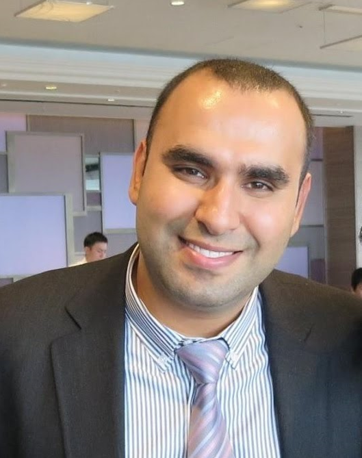
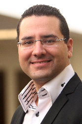
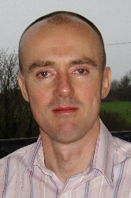
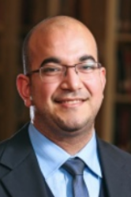
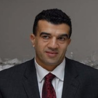

The 2nd International Workshop on Refactoring
IWoR 2018
September 4, 2018, Montpellier, France
to be held in conjunction with the
33rd IEEE/ACM Automated Software Engineering Conference (ASE 2018)
Welcome to IWoR 2018!
We are pleased to announce IWoR 2018, the 2nd edition of the international workshop dedicated to software refactoring.
The goal of the 2nd International Workshop on Refactoring (IWoR 2018) is to provide an informal interactive forum for researchers and practitioners to exchange ideas and experiences, streamline and foster research on software refactoring, identify some common ground of their work, share lessons and challenges, thereby articulating a vision for the future of software refactoring.
Successful software products evolve through a process of continuous changes as bugs are fixed, new features added, and quality issues addressed. Refactoring supports the volatile software lifecycle by providing better ways to reduce and manage the growing complexity of software systems while improving developer productivity. Refactoring can be performed at all levels from requirement specification down to source code level, and, in essence, involves improving the internal structure of a software artefact without altering its functionality. In spite of the popularity of refactoring both in practice and as a research topic, many open questions remain, particularly in terms of understanding how refactoring is performed, measuring the impact of refactoring, and improving tool support in all areas of refactoring.
We invite submissions from both academia and industry on any topic that is refactoring related, including, but not limited to:
We solicit four types of submission:
These different categories offer researchers who are at different stages in their research maturity the opportunity to benefit from workshop participation. Page limits include references.
All paper submissions will be reviewed by three program committee members. The authors of accepted submissions will be asked to join the workshop. We will encourage all participants to submit a paper of any of the four categories, but the workshop will be open. All interested parties are welcome to register, even without an accepted paper.
All submissions must be formatted according to the IEEE Conference Proceedings Formatting Guidelines (title in 24pt font and full text in 10pt font, LaTEX users must use \documentclass[10pt,conference]{IEEEtran} without including the compsoc or compsocconf option) and should be submitted through EasyChair at:
https://easychair.org/conferences/?conf=iwor2018
Accepted papers will be published in the workshop proceedings in the IEEE digital library.
A selection of the best papers will be invited to submit extended versions for tentative publication in a Special Issue of a journal (to be confirmed).
To be announced.
To be announced.
To be announced.
|  |
Ali Ouni ETS Montreal, University of Quebec, Canada |
|  | Marouane Kessentini
University of Michigan, USA |
|  | Mel Ó Cinnéide
University College Dublin, Ireland |
Felienne Hermans Delft University of Technology, the Netherlands |
|
|  | Wiem Mkaouer
Rochester Institute of Technology, USA |
|  | Mohammed Hilali ETS Montreal, University of Quebec, Canada |
To be announced.
{% include paginator.html %}